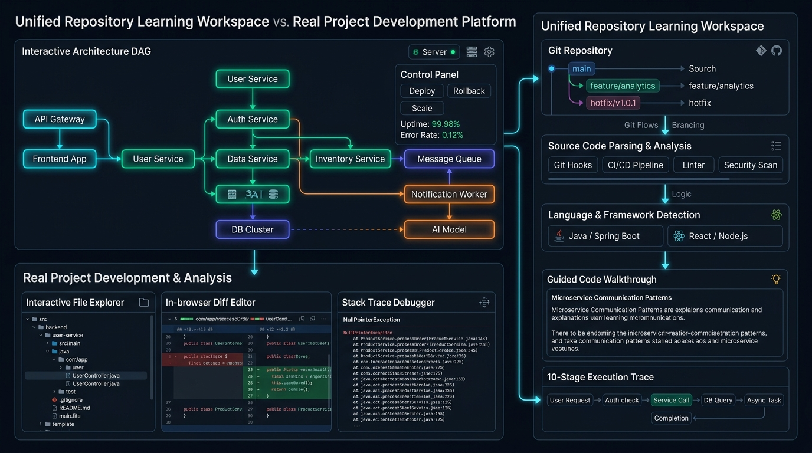

01. Deconstructing a Codebase Architecture DAG
When encountering a new repository, avoid reading files randomly from top to bottom. Instead, trace the request path using a Directed Acyclic Graph (DAG):

Fig 1: Unified Repository Architecture DAG, File Parsing & Debugging
1. Entry Point: Locate main.py or index.js where routes are registered.
2. Middleware Gate: Identify authentication, CORS, and rate limiting hooks.
3. State Layer: Check how databases and Redis caches are pooled.
4. Async Offload: Find Celery, BullMQ, or Kafka consumer workers.
02. Professional Git Branching & Protection Rules
Never write changes directly to main. Always author work on isolated feature branches to keep the production branch green.
03. Sanitized Environment Setup & Health Verification
Production repositories should never commit real credentials or API tokens into source control. Always inspect .env.example before running containers:
04. Pinpointing Stack Traces in Real Code
When an exception crashes a service, read the stack trace from bottom to top to identify the root cause frame within project code:
Connecting Code to Specialized Engineering Studios
When working on specific repository layers, carry project context into our dedicated simulators: